OVERVIEW
I worked on this project as a part of Design for America, with a team of 7 Berkeley students. The Design for America mission is to empower students to tackle social challenges with human centered design, and my team chose to focus on the mental health of children with chronic diseases.
THE PROBLEM
Children with chronic diseases spend many hours in isolation or only with their parents and close friends, and often long for more social interaction or a way to express their thoughts and feelings.
RESEARCH
We interviewed doctors, researchers, and psychiatrists to understand more about the problems children with chronic diseases face. We learned that maintaing emotional and mental health while undergoing treatment is a huge problem, and is a touchy subject that many other products and companies fail to address adequately. We learned about how to design a process that would be simple for children to understand yet still engaging and helpful. We learned about how children process metaphors so we could address topics like their mental health because of the delicate nature of the subject.
THE CONCEPT
We decided to build a web application based on a concept that built upon on the Beads of Courage, which is a physical product. The idea is to build a virtual string of beads that acts as a sort of diary-- each bead stands for a milestone or some other important event in your life, ranging from important events in your treatment process to unrelated personal achievements. Because we also wanted it to serve as a safe space for mental expression, users can also add sentences of reflection to each event in their beads. Adding a bead to your string is meant to be a therapeutic experience, symbolizing letting go of your thoughts and building your negative experiences or emotions into something positive.
The target age group for the product is children from ages 7 - 15, and we learned that it is often more difficult for younger children to adequately express their feelings in words, so we also wanted to provid the option to draw a picture or submit a metaphor to describe how each bead makes them feel.
MOCKUPS
 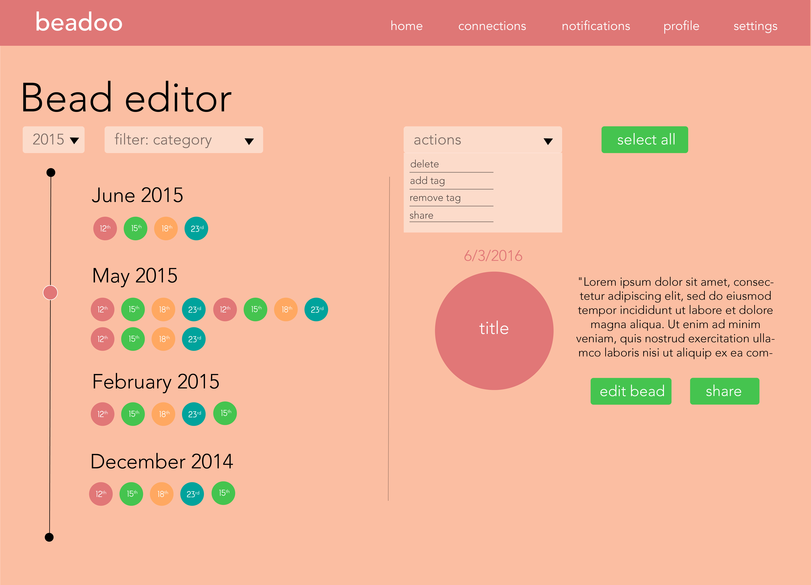
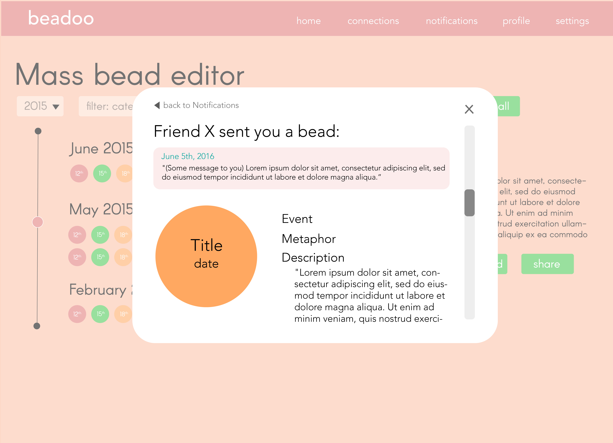
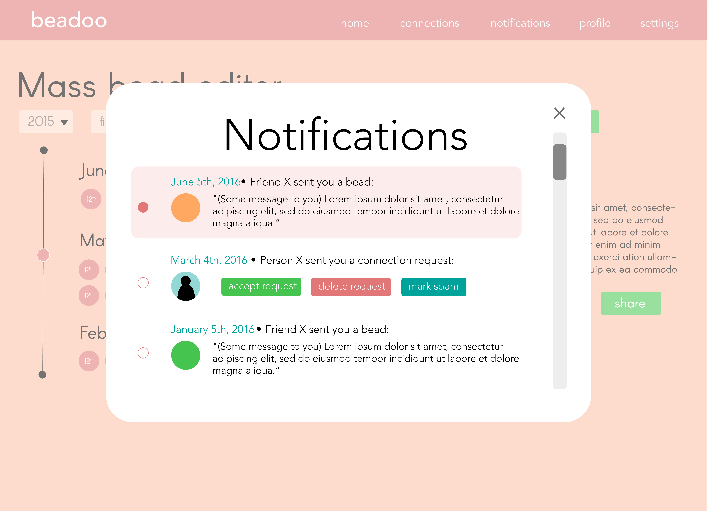
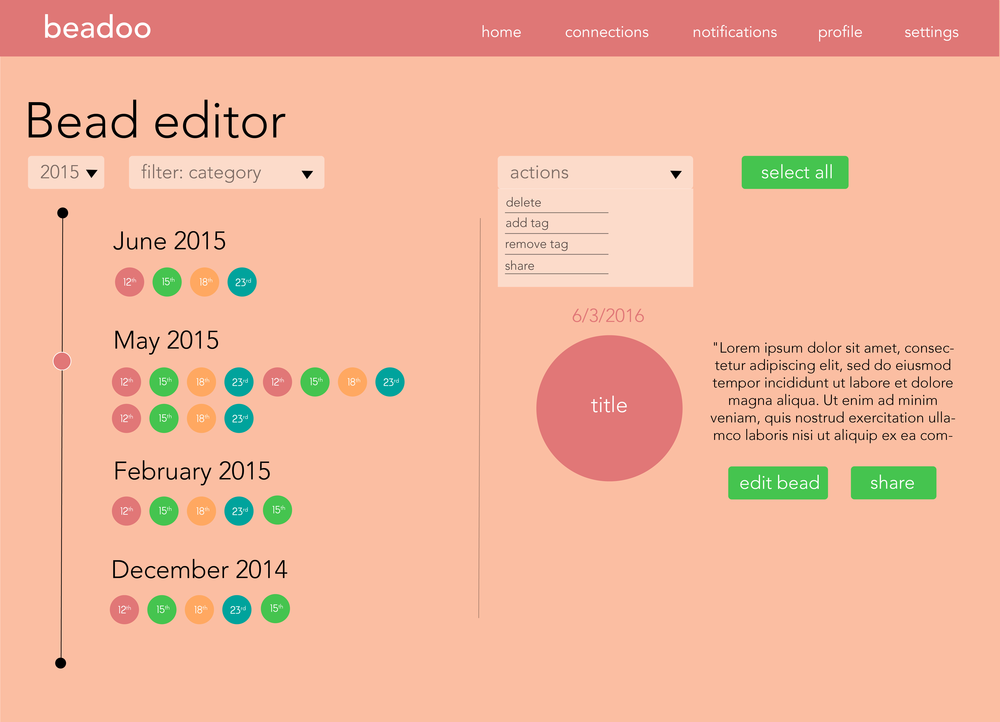
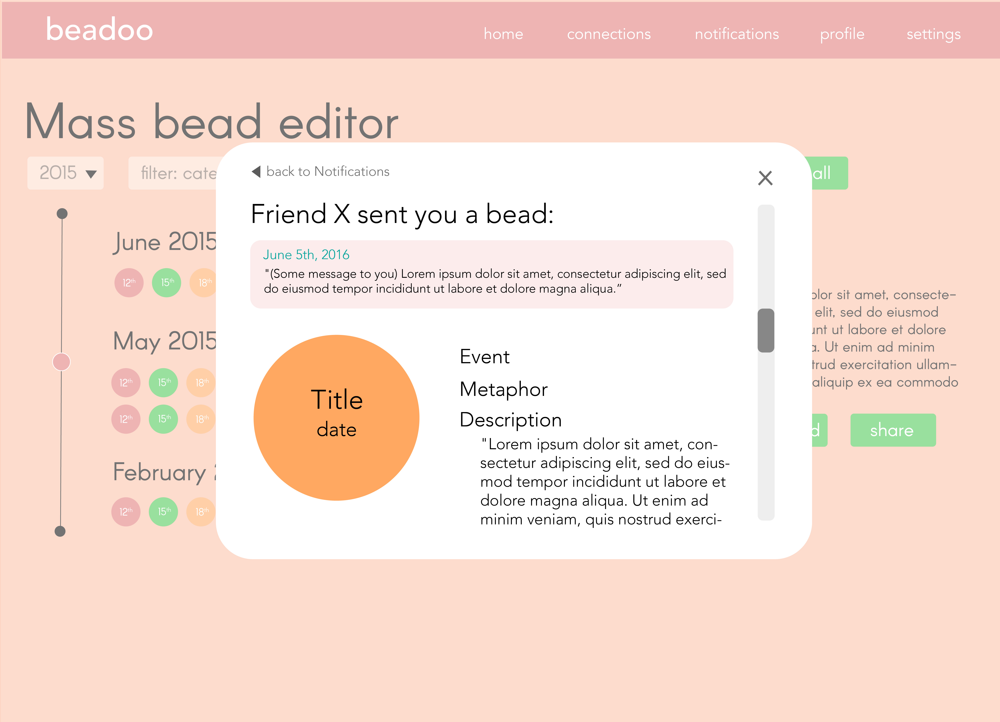
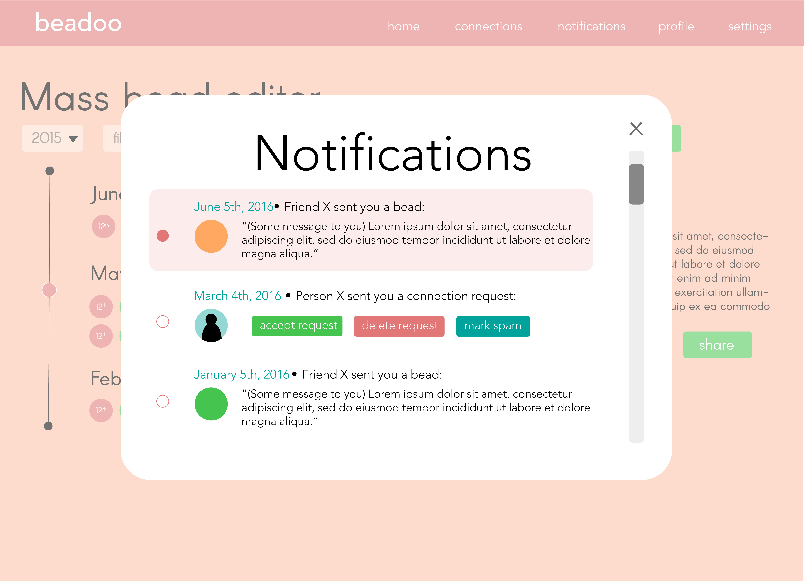
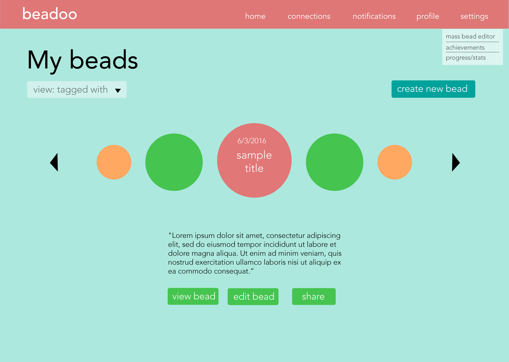
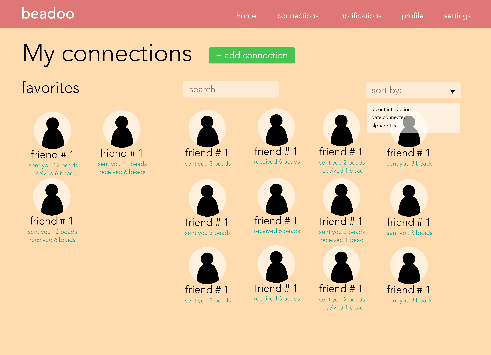
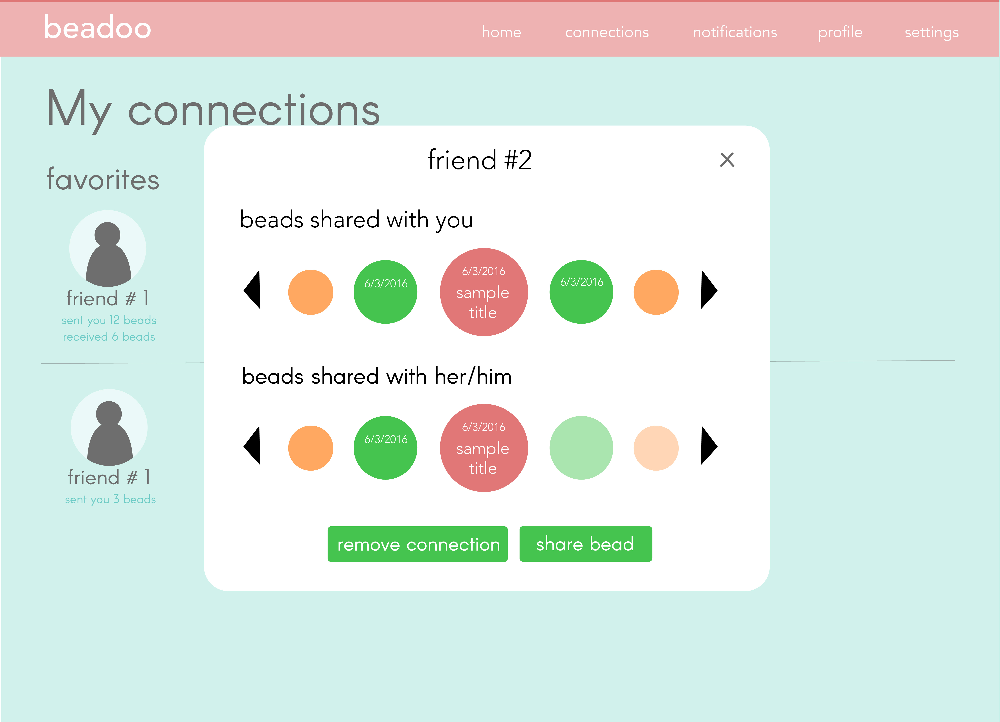
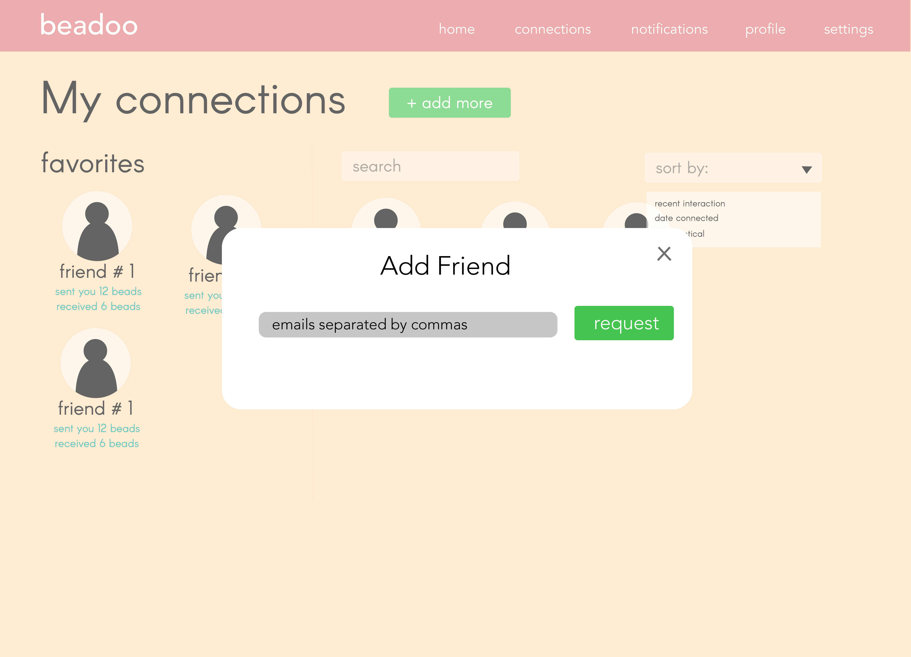
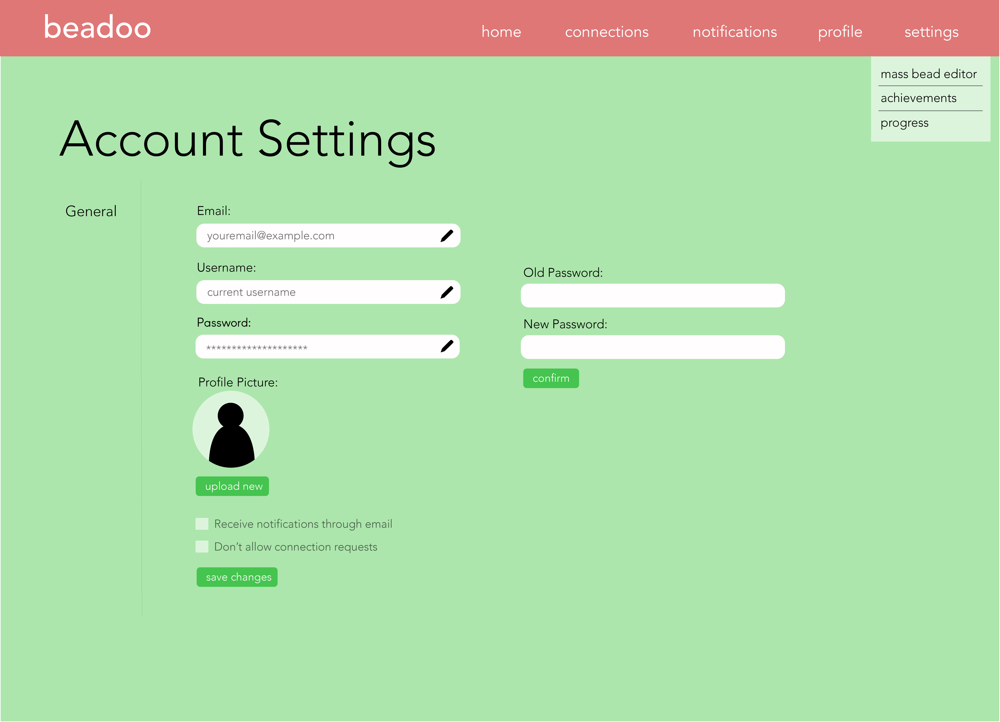
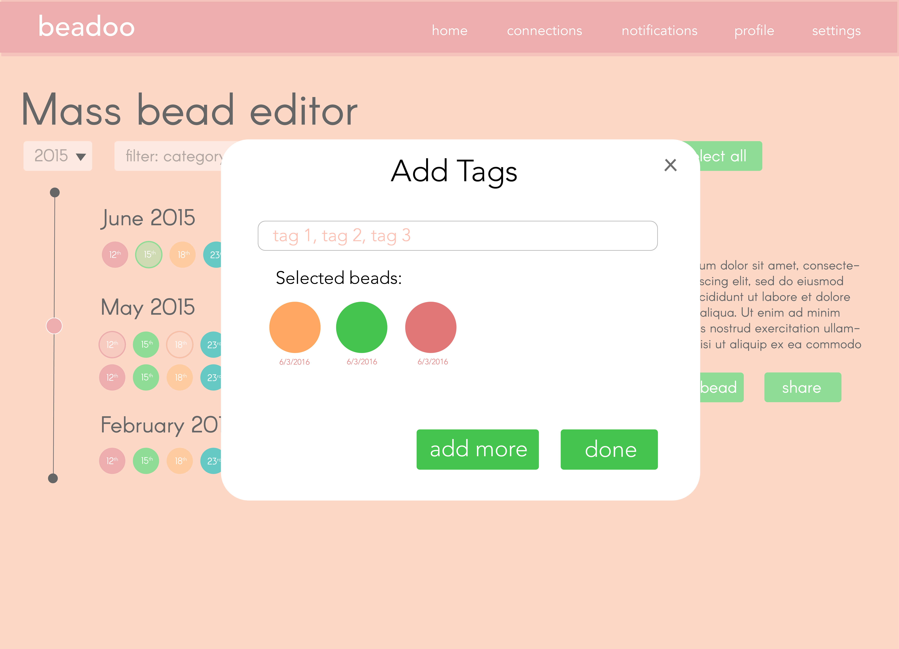